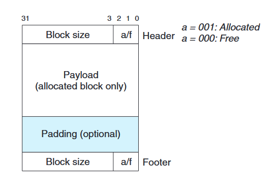
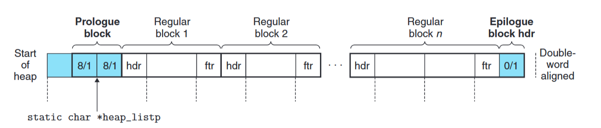
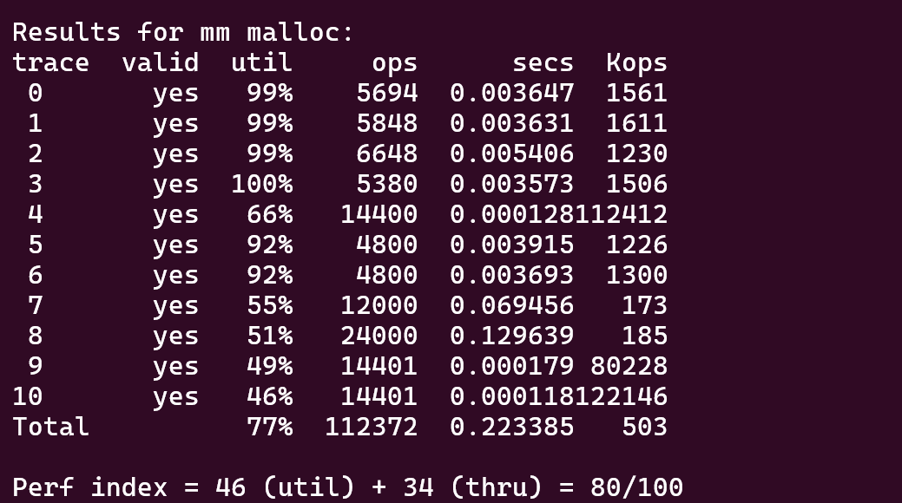

本 Lab 需要实现一个内存分配器，技巧性较强，对应知识点为书中的第 9 章的第 9.9 节。个人认为是所有 Lab 中难度最高的一个，我这里也是时间所迫，只参照教材实现了隐式空闲链表，显式空闲链表的实现尚存在一些 bug，在本文暂不介绍。
思路 实验要求 实现 mm_init, mm_malloc, mm_free, mm_realloc。
mm_malloc 需要返回 8 字节对齐的指针。
mm_realloc: 返回一个指向至少 size 字节的内存区域指针。
如果 ptr 为空，作用等同于 mm_malloc(size)。
如果 size 等于 0，作用等用于 mm_free(ptr)。
如果 ptr 非空，将 ptr 指向区域的大小更改为 size 字节，并返回新区域的内存地址。
隐式空闲链表 首先介绍一下书中介绍的隐式空闲链表的设计，主要分为两个方面：空闲块的设计和空闲链表的组织。
空闲块的设计 
一个空闲块由三部分组成：首部、载荷（可能包含填充）和尾部。头部和尾部的内容完全一致，之所以要引入这样的冗余信息，是为了实现常数时间复杂度的反向访问。因为内存载荷大小的不确定性，因此无法直接根据当前内存载荷的地址计算得到前一块的地址，而引入了尾部后，就能够根据固定步长（当前块的首部和上一块的尾部地址差一个字）计算得到前一块载荷的地址。
另外，首（尾）部的内容也值得一提，由于空闲块需要 8 字节对齐，因此 block size 的低 3 位必定为 0，因此这 3 位的信息是冗余的，可省略，转而将其最低位作为分配位，0 代表空闲，1 代表已分配。
空闲链表的组织 
空闲链表的组织如上图所示，可以看到，常规的内存块两端引入了序言块（prologue block）和结尾块（epilogue block），同时为了保持 8 字节对齐，还在序言块的头部引入了一个 4 字节的 padding 块。
序言块和结尾块的分配位都标记为 1，之所以要这么做，是为了更方便地处理空闲块合并时的边界条件，它们的作用其实就相当于链表的 dummy 结点。其中，结尾块的大小字段设置为 0，用以唯一地对其进行标记（因为其他块的大小必定大于 0）。
各函数实现 由于 mm_init，mm_malloc 等操作书中已经实现且比较易懂，接下来主要介绍 extend_heap，find_fit，place 和 mm_realloc。
extend_heapextend_heap 的作用是对堆进行扩展，具体来说是先使用 mm_sbrk 向上增长堆尾指针 mm_brk 的位置，再将新扩展出来的内存块连接到原有块的末尾。
连接这部分的操作不太易懂，书中也对此做出了解释：
The remainder of the extendheap function (lines 12–17) is somewhat subtle. The heap begins on a double-word aligned boundary, and every call to extend heap returns a block whose size is an integral number of double words. Thus, every call to mem_sbrk returns a double-word aligned chunk of memory immediately following the header of the epilogue block. This header becomes the header of the new free block (line 12), and the last word of the chunk becomes the new epilogue block header (line 14). Finally, in the likely case that the previous heap was terminated by a free block, we call the coalesce function to merge the two free blocks and return the block pointer of the merged blocks (line 17).
简单来说，新扩展出来的块的起始地址即 mm_sbrk(size) 的返回值 bp，它紧挨在原来块的末尾——结尾块的头部，而 PUT(HDRP(bp), PACK(size, 0)) 则正好是将其覆盖并作为新块的头部，注意 HDRP 的定义：#define HDRP(bp) ((char *)(bp) - WSIZE)。随后便是创建尾部，并在新块的末尾添加一个新的结尾块，最后尝试将新块与前一块进行合并。
1 2 3 4 5 6 7 8 9 10 11 12 13 14 15 16 17 18 19 static void *extend_heap (size_t words) { char *bp; size_t size; size = (words % 2 ) ? (words + 1 ) * WSIZE : words * WSIZE; if ((long )(bp = mem_sbrk(size)) == -1 ) { return NULL ; } PUT(HDRP(bp), PACK(size, 0 )); PUT(FTRP(bp), PACK(size, 0 )); PUT(HDRP(NEXT_BLKP(bp)), PACK(0 , 1 )); return coalesce(bp); }
find_fit这部分其实没什么好说的，我只是实现了最简单的首次匹配算法，需要注意的就是根据 size 是否等于 0 来判断当前遍历块是否是结尾块。
1 2 3 4 5 6 7 8 9 10 11 12 13 14 15 16 static void *find_fit (size_t asize) { size_t size; for (void *blkp = heap_listp; (size = GET_SIZE(HDRP(blkp))) != 0 ; blkp = NEXT_BLKP(blkp)) { if (size >= asize && !GET_ALLOC(HDRP(blkp))) { return blkp; } } return NULL ; }
placeplace 操作通常紧跟在成功查找到空闲块之后执行，作用是将 asize 大小的块”放置在“地址为 bp 的块中。一种最简单朴素的做法当然是将整个块进行完全分配，但是这样会引入大量的内部碎片（internal fragmentation），降低内存的利用率。
为了改善这一点，需要对块进行分割，书中提到的一种简单的分割策略是：如果分割后剩余的块大小大于等于隐式空闲链表空闲块设计的最小大小（即 8 字节，只包含首部和尾部），则进行分割，否则，整个分配。在代码实现上，分割时只需要分配放置分配块与剩余块的首部和尾部即可。
1 2 3 4 5 6 7 8 9 10 11 12 13 14 15 16 17 static void place (void *bp, size_t asize) { size_t size = GET_SIZE(HDRP(bp)); size_t remain = size - asize; if (remain >= DSIZE) { PUT(HDRP(bp), PACK(asize, 1 )); PUT(FTRP(bp), PACK(asize, 1 )); bp = NEXT_BLKP(bp); PUT(HDRP(bp), PACK(remain, 0 )); PUT(FTRP(bp), PACK(remain, 0 )); } else { PUT(HDRP(bp), PACK(size, 1 )); PUT(FTRP(bp), PACK(size, 1 )); } }
mm_reallocmm_realloc 作用是调整地址为 ptr 的块大小，另外当 ptr 为空或 size 为 0 时有特殊作用，这部分比较简单，下面只讨论普遍的情况：
虽说是用户调整块大小，但块大小仍然要保持 8 字节对齐，因此首要工作是计算实际调整后的块大小 asize 的值。随后根据 asize 与原始块的大小 osize 进行比较，根据三种不同情况分别进行处理：
osize == asize：此时不变，返回 ptr 即可。osize > asize：块进行收缩，需要将其进行分割，回想前面实现的 place 作用正好就是分割块，因此直接调用后返回 ptr 即可。osize < asize：块进行扩张，有三种解决方式：
首先可以尝试合并相邻块，但由于要保证块调整后数据的完整性，因此合并前一块的操作略显麻烦，需要将数据整个进行移动，且同时也会引入额外的时间开销。这里为了实现的简单，只考虑对后一块进行合并，这样就只需要调整首尾块大小，而不需要对内存载荷做任何修改。
若无可合并的块或合并后块大小仍然不足，则遍历整个空闲链表，找到块大小大于等于 asize 的块，使用 place 对其进行分割，并使用 memcpy 将原始块的数据拷贝至新块中。最后，极其关键 的一点，需要将原始块进行释放，否则将会出现内存耗尽的错误，我就忽视了这一点，debug 了很长时间…
若空闲链表中找不到满足条件的块，则使用 extend_heap 对堆进行扩展，后续的操作与 (2) 相同。
1 2 3 4 5 6 7 8 9 10 11 12 13 14 15 16 17 18 19 20 21 22 23 24 25 26 27 28 29 30 31 32 33 34 35 36 37 38 39 40 41 42 43 44 45 46 47 48 49 50 51 52 53 54 void *mm_realloc (void *ptr, size_t size) { size_t osize, asize; size_t extendsize; char *bp; if (ptr == NULL ) { return mm_malloc(size); } else if (size == 0 ) { mm_free(ptr); return NULL ; } if (size < DSIZE) { asize = 2 * DSIZE; } else { asize = DSIZE * ((size + (DSIZE) + (DSIZE - 1 )) / DSIZE); } osize = GET_SIZE(HDRP(ptr)); if (osize == asize) { bp = ptr; } else if (osize > asize) { place(ptr, asize); bp = ptr; } else { if (!GET_ALLOC(HDRP(NEXT_BLKP(ptr)))) { osize += GET_SIZE(HDRP(NEXT_BLKP(ptr))); PUT(HDRP(ptr), PACK(osize, 1 )); PUT(FTRP(ptr), PACK(osize, 1 )); } if (osize >= asize) { place(ptr, asize); bp = ptr; } else if ((bp = find_fit(asize)) != NULL ) { place(bp, asize); memcpy (bp, ptr, MIN(osize, asize)); mm_free(ptr); } else { extendsize = MAX(asize, CHUNKSIZE); if ((bp = extend_heap(extendsize / WSIZE)) != NULL ) { place(bp, asize); memcpy (bp, ptr, MIN(osize, asize)); } mm_free(ptr); } } return bp; }
测试结果 最终经过测试，隐式空闲链表的得分如下所示。其中内存利用率得分为 46 分（满分 60 分），意外的还不错。性能得分起伏较大，分数在 20~35 分（满分 40 分）不等，这部分感觉比较玄学。

小技巧：如何切换不同的mm.c实现 本 Lab 可能需要写多个不同版本的 mm.c，进行效率得分的比对，如何在不同的 mm.c 实现中切换值得一说。
起初我的设想是使用宏控制不同 mm.c 源文件的预处理，并将它们（例如 mm-imp.c、mm-ex.c）都写入 Makefile 中同时编译，但这样又得分别编写各自的编译行为，比较麻烦。
最后想到将 mm-imp.c 和 mm-ex.c 视作文本文件，不进行编译，而是供实际编译的 mm.c 借助预处理器选择性导入：
1 2 3 4 5 6 7 #if 0 #include "mm-imp.c" #else #include "mm-ex.c" #endif
这样在每次在显式和隐式实现中切换时就只需要更改 #if 后的 0 和 1 了。
代码 1 2 3 4 5 6 7 8 9 10 11 12 13 14 15 16 17 18 19 20 21 22 23 24 25 26 27 28 29 30 31 32 33 34 35 36 37 38 39 40 41 42 43 44 45 46 47 48 49 50 51 52 53 54 55 56 57 58 59 60 61 62 63 64 65 66 67 68 69 70 71 72 73 74 75 76 77 78 79 80 81 82 83 84 85 86 87 88 89 90 91 92 93 94 95 96 97 98 99 100 101 102 103 104 105 106 107 108 109 110 111 112 113 114 115 116 117 118 119 120 121 122 123 124 125 126 127 128 129 130 131 132 133 134 135 136 137 138 139 140 141 142 143 144 145 146 147 148 149 150 151 152 153 154 155 156 157 158 159 160 161 162 163 164 165 166 167 168 169 170 171 172 173 174 175 176 177 178 179 180 181 182 183 184 185 186 187 188 189 190 191 192 193 194 195 196 197 198 199 200 201 202 203 204 205 206 207 208 209 210 211 212 213 214 215 216 217 218 219 220 221 222 223 224 225 226 227 228 229 230 231 232 233 234 235 236 237 238 #define ALIGNMENT 8 #define ALIGN(size) (((size) + (ALIGNMENT - 1)) & ~0x7) #define SIZE_T_SIZE (ALIGN(sizeof(size_t))) #define WSIZE 4 #define DSIZE 8 #define CHUNKSIZE (1 << 12) #define MAX(x, y) ((x) > (y) ? (x) : (y)) #define MIN(x, y) ((x) < (y) ? (x) : (y)) #define PACK(size, alloc) ((size) | (alloc)) #define GET(p) (*(unsigned int *)(p)) #define PUT(p, val) (*(unsigned int *)(p) = (val)) #define GET_SIZE(p) (GET(p) & ~0x7) #define GET_ALLOC(p) (GET(p) & 0x1) #define HDRP(bp) ((char *)(bp) - WSIZE) #define FTRP(bp) ((char *)(bp) + GET_SIZE(HDRP(bp)) - DSIZE) #define NEXT_BLKP(bp) ((char *)(bp) + GET_SIZE(((char *)(bp) - WSIZE))) #define PREV_BLKP(bp) ((char *)(bp) - GET_SIZE(((char *)(bp) - DSIZE))) static void *heap_listp; static void *extend_heap (size_t words) ;static void *coalesce (void *bp) ;static void *find_fit (size_t asize) ;static void place (void *bp, size_t asize) ;int mm_init (void ) { if ((heap_listp = mem_sbrk(4 * WSIZE)) == (void *)-1 ) { return -1 ; } PUT(heap_listp, 0 ); PUT(heap_listp + (1 * WSIZE), PACK(DSIZE, 1 )); PUT(heap_listp + (2 * WSIZE), PACK(DSIZE, 1 )); PUT(heap_listp + (3 * WSIZE), PACK(0 , 1 )); heap_listp += (2 * WSIZE); if (extend_heap(CHUNKSIZE / WSIZE) == NULL ) { return -1 ; } return 0 ; } void *mm_malloc (size_t size) { size_t asize; size_t extendsize; char *bp; if (size == 0 ) { return NULL ; } if (size < DSIZE) { asize = 2 * DSIZE; } else { asize = DSIZE * ((size + (DSIZE) + (DSIZE - 1 )) / DSIZE); } if ((bp = find_fit(asize)) != NULL ) { place(bp, asize); return bp; } extendsize = MAX(asize, CHUNKSIZE); if ((bp = extend_heap(extendsize / WSIZE)) == NULL ) { return NULL ; } place(bp, asize); return bp; } void mm_free (void *ptr) { size_t size = GET_SIZE(HDRP(ptr)); PUT(HDRP(ptr), PACK(size, 0 )); PUT(FTRP(ptr), PACK(size, 0 )); coalesce(ptr); } void *mm_realloc (void *ptr, size_t size) { size_t osize, asize; size_t extendsize; char *bp; if (ptr == NULL ) { return mm_malloc(size); } else if (size == 0 ) { mm_free(ptr); return NULL ; } if (size < DSIZE) { asize = 2 * DSIZE; } else { asize = DSIZE * ((size + (DSIZE) + (DSIZE - 1 )) / DSIZE); } osize = GET_SIZE(HDRP(ptr)); if (osize == asize) { bp = ptr; } else if (osize > asize) { place(ptr, asize); bp = ptr; } else { if (!GET_ALLOC(HDRP(NEXT_BLKP(ptr)))) { osize += GET_SIZE(HDRP(NEXT_BLKP(ptr))); PUT(HDRP(ptr), PACK(osize, 1 )); PUT(FTRP(ptr), PACK(osize, 1 )); } if (osize >= asize) { place(ptr, asize); bp = ptr; } else if ((bp = find_fit(asize)) != NULL ) { place(bp, asize); memcpy (bp, ptr, MIN(osize, asize)); mm_free(ptr); } else { extendsize = MAX(asize, CHUNKSIZE); if ((bp = extend_heap(extendsize / WSIZE)) != NULL ) { place(bp, asize); memcpy (bp, ptr, MIN(osize, asize)); } mm_free(ptr); } } return bp; } static void *extend_heap (size_t words) { char *bp; size_t size; size = (words % 2 ) ? (words + 1 ) * WSIZE : words * WSIZE; if ((long )(bp = mem_sbrk(size)) == -1 ) { return NULL ; } PUT(HDRP(bp), PACK(size, 0 )); PUT(FTRP(bp), PACK(size, 0 )); PUT(HDRP(NEXT_BLKP(bp)), PACK(0 , 1 )); return coalesce(bp); } static void *coalesce (void *bp) { size_t prev_alloc = GET_ALLOC(FTRP(PREV_BLKP(bp))); size_t next_alloc = GET_ALLOC(HDRP(NEXT_BLKP(bp))); size_t size = GET_SIZE(HDRP(bp)); if (prev_alloc && next_alloc) { return bp; } else if (prev_alloc && !next_alloc) { size += GET_SIZE(HDRP(NEXT_BLKP(bp))); PUT(HDRP(bp), PACK(size, 0 )); PUT(FTRP(bp), PACK(size, 0 )); } else if (!prev_alloc && next_alloc) { size += GET_SIZE(HDRP(PREV_BLKP(bp))); PUT(FTRP(bp), PACK(size, 0 )); PUT(HDRP(PREV_BLKP(bp)), PACK(size, 0 )); bp = PREV_BLKP(bp); } else { size += GET_SIZE(HDRP(PREV_BLKP(bp))) + GET_SIZE(FTRP(NEXT_BLKP(bp))); PUT(HDRP(PREV_BLKP(bp)), PACK(size, 0 )); PUT(FTRP(NEXT_BLKP(bp)), PACK(size, 0 )); bp = PREV_BLKP(bp); } return bp; } static void *find_fit (size_t asize) { size_t size; for (void *blkp = heap_listp; (size = GET_SIZE(HDRP(blkp))) != 0 ; blkp = NEXT_BLKP(blkp)) { if (size >= asize && !GET_ALLOC(HDRP(blkp))) { return blkp; } } return NULL ; } static void place (void *bp, size_t asize) { size_t size = GET_SIZE(HDRP(bp)); size_t remain = size - asize; if (remain >= DSIZE) { PUT(HDRP(bp), PACK(asize, 1 )); PUT(FTRP(bp), PACK(asize, 1 )); bp = NEXT_BLKP(bp); PUT(HDRP(bp), PACK(remain, 0 )); PUT(FTRP(bp), PACK(remain, 0 )); } else { PUT(HDRP(bp), PACK(size, 1 )); PUT(FTRP(bp), PACK(size, 1 )); } }

 微信
微信 支付宝
支付宝